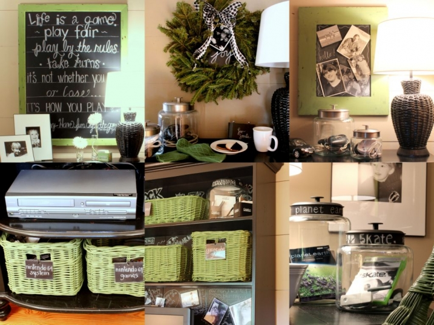
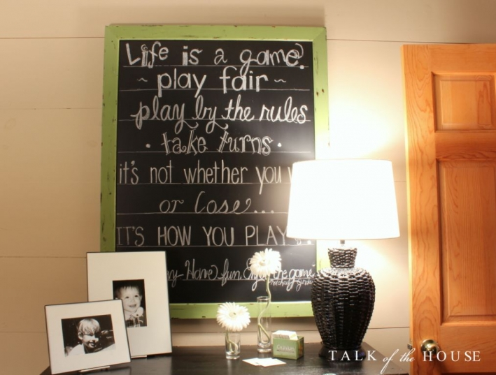
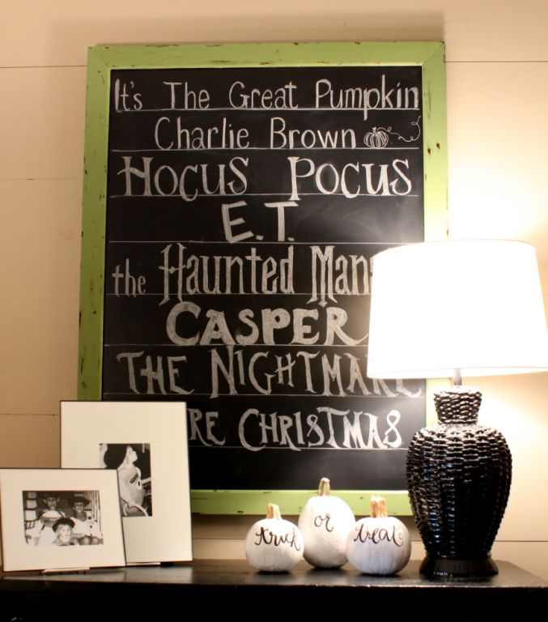

.png)
.PNG)
.PNG)
.PNG)
.PNG)
.PNG)
.JPG)
.JPG)
.PNG)
.PNG)



In the last year or so, I have shown you a number of chalkboard related projects around our house. Several of you have asked for information on how I do chalkboard lettering. So today I want to share with you my little bit of knowledge on the subject. I look at it as simply drawing with chalk. 🙂 Please keep in mind, I am not a professional.
This was one of my first larger sized ones – the Life is a Game board. For it, I tried out a variety of fonts with sayings about playing games. I drew lines to help keep it straight.
For the Halloween movie board, I looked at the covers of the dvds and tried to write in a font that matched that style for each one.For the Christmas board, I simply printed out the message using a variety of fonts, and then I wrote it on the chalkboard looking at the printout. Most things I have read say to mix up to 3 fonts on a project.
For the spring one, I played around with the lettering until I had it like I wanted.
 This was a menu board I did last year. I want you to notice how white the lettering is. The reason it is like that is because it was done with a chalk marker (sometimes called chalk ink.)
This was a menu board I did last year. I want you to notice how white the lettering is. The reason it is like that is because it was done with a chalk marker (sometimes called chalk ink.)
This is the chalk marker I use. You can normally find them at Michael’s or Hobby Lobby, but it can also be ordered from Amazon (like everything else on the planet. 🙂 )

It is easier to handle, but the writing does not look as handcrafted as a regular piece of chalk. It will last much longer than regular chalk, and it can be erased. Sometimes it is difficult to get it all off without leaving a shadow. Just rub it with a piece of Magic Eraser, and that does the trick. I normally use plain old chalk for most projects, but this one had so much writing, it was easier with the chalk marker.

Here is another project done with a chalk marker. I wanted you to see that you can write on practically any surface with it.
 And here is one of several I have done with recipes (using ordinary chalk.)
And here is one of several I have done with recipes (using ordinary chalk.)
So let’s look at how I do a chalkboard recipe. Start by rubbing a piece of chalk all over a board to “season” it. Wipe it off with a dry paper towel. This keeps “ghost letters” from appearing under the new writing. You are going to want to keep a dry and a damp cloth beside you as you work to erase your mistakes. After seasoning the board, the title was written . Normally, I would try to center the title, but in this case, I wanted to draw a little something in the space after the title (a tomato.) Remember from my first lettering post, I try to make the letters go up and down on an invisible line.
After seasoning the board, the title was written . Normally, I would try to center the title, but in this case, I wanted to draw a little something in the space after the title (a tomato.) Remember from my first lettering post, I try to make the letters go up and down on an invisible line.
Then I drew a line to start the “banner” under the title. And then I finished drawing the banner.
And then I finished drawing the banner.
For this particular board, I went ahead and used lines to help me keep the letters straight. It actually looks more like a recipe card to me when it has that. I don’t measure like many professionals will tell you to do. I just “eyeball” it. The end of the ruler is up against the chalkboard frame, and that keeps it straight. Don’t try drawing out all your lines at one time (like notebook paper.) Your hand will smear the lines when you begin to write your text on it. 
Just draw a line and write the text for it before moving to the next line. You can erase between the words if you prefer.
And continue doing that until you finish.
 In my last lettering post, a sweet reader (Kathy) made a suggestion that perhaps an alphabet of my lettering style would help. So here is a rough draft of some of the letters I use in my writing. Remember that I trace over the down strokes to give more variety to the width of the letter parts.
In my last lettering post, a sweet reader (Kathy) made a suggestion that perhaps an alphabet of my lettering style would help. So here is a rough draft of some of the letters I use in my writing. Remember that I trace over the down strokes to give more variety to the width of the letter parts.

 I don’t have a particular brand of chalk that I prefer. I have seen recommendations for Crayola chalk in several places, but it has not made that big a difference to me. I have also read that you should sharpen your chalk with a one of those small personal pencil sharpeners that you can find with all the back to school sales now. That would probably help if it worked, but I have never done it. So I am going to get a sharpener and try that out. I have also read that you can dip your chalk in water frequently to help make the writing brighter. I have never tried that, and I am curious about it. So I may play with that idea soon, too. And yes, I do consider this play.
I don’t have a particular brand of chalk that I prefer. I have seen recommendations for Crayola chalk in several places, but it has not made that big a difference to me. I have also read that you should sharpen your chalk with a one of those small personal pencil sharpeners that you can find with all the back to school sales now. That would probably help if it worked, but I have never done it. So I am going to get a sharpener and try that out. I have also read that you can dip your chalk in water frequently to help make the writing brighter. I have never tried that, and I am curious about it. So I may play with that idea soon, too. And yes, I do consider this play.
**update: I just tried out the pencil sharpener sharpened piece of chalk, and it works wonderfully! You can see the chalkboard done with it here.
Now if you want to see a real professional at work, click on the photo below to see Dana Tanamachi making her art. She is truly gifted.
Another artist you should take a look at is CJ Hughes….beautifully amazing work here.
One other thing that I have not mentioned is the quality of your board. The better it is, the easier it is on which to letter. Don’t expect a board from the dollar store to do as well as one from Pottery Barn (and no I am not being a store snob here…I have used both.) The finish does make a difference. But…even if you don’t have a board, you can still do all of this on black cardstock – seriously. Several years ago, I started wrapping large boxes in black paper for my classroom to use for displaying quotes. I didn’t have the money to spend on super large chalkboards for classroom decorations, and these worked great. You can see them by clicking here.
Okay… I think that is all I have to tell you about chalkboards today. Hopefully this has helped you in some way. Chalk is so forgiving because you can erase your mistakes as you go, and then keep on going. So get some chalk, and go play with it. 🙂
until next time…


.PNG)
Hi Kelly,
You mentioned the quality of the board. Have you ever seen a chalkboard constructed of actual chalkboard material, or does it always seem to be chalkboard paint? I really would like something authentic, like the old blackboards that we used to see in school (yes, I am that old:) I have a lovely corkboard that my father-in-law made for me using wine corks, and I would love to find something to pair with it in my kitchen. But, so far, that has not happened because I am so darned picky!!!!
———————————————————————-
My boards are from Pottery Barn and they are definitely a blackboard. Our old blackboards in our schools here were actually green. 🙂 I am picky too about the surface, so I know what you mean. What a neat idea to make a corkboard out of wine corks!
Kelly
Your amazing……….your house is amazing, and thank you for TEACHING me how to make my house amazing too! Hugs.
What a fun post. Thanks for your insight. Your green chalkboard is my favorite for sure.
———————————————————————
I like the green one the best too, Lori. I thought about painting the cabinets in the new room that color green, but I am now leaning towards a yellow. Decisions decisions! Glad you enjoyed the post. 🙂
Kelly
Wow! What a great tutorial! Enjoyed it! This is becoming a big craze, it seems everywhere I go I see chalkboard art–:) I’m still on my adventure in St.Pete/Tampa area. Have been taking in museums: Museum of Fine Arts, Chihuly and the Dali. All within walking distance of our hotel (Renaissance Vinoy Resort). Also enjoying excellent cuisine– I always try something new and take pictures to send to my friends!! Loving retirement! Thinking of all my teacher friends–school begins tomorrow–I will always miss opening day with my first graders!:( Second day– not so much!:)
———————————————————————–
Okay…Louvina…quit rubbing it in that you are taking dream vacations while the rest of us have to go to work. LOL Sound like you are having fun! Opening day is always exhausting to me. I actually like the second day better because you can get back into a normal routine. Glad you liked the chalkboard post.
Kelly
Thank you so much for such detailed information on how to letter! I love your chalk boards, and your writing is wonderful.
Now I need to practice, I mean play! 😉
———————————————————————–
Thank you for your very sweet compliments, Mary! Yes, go play now.
Kelly
Oh my goodness! Only a teacher could make such beautiful signs! My handwriting is so pitiful your students could do better! Yours are wonderful!!
———————————————————————
Cindy, I doubt my students would do better than you. How funny that you should mention my being a teacher! I did not even think about that as I was getting the post together (I truly have a one-track-mind.)
Kelly
Wow! You are one talented lady! While my handwriting is great on paper – not so much on chalkboard. Thanks for sharing your tips!
————————————————————————-
Talia, I bet your writing is better than you think it is. We are often our own worst critic. Get the chalk and go practice.:)
Kelly
Kelly…these are amazing! You are so lucky to be so talented!!
Thanks for sharing! xoxo
———————————————————————-
Gosh, thank you Sandy! You are very kind to say that.
Kelly
Thanks, Kelly. I was just re-reading your first letting post a couple days ago. Off to write a something on the kitchen chalkboard!
———————————————————————-
You are welcome Patty! I hope you got your kitchen chalkboard project done, and that you love it!
Kelly
hi Kelly, You have beautiful handwriting! I need to look into the chalk ink. My chalk board was painted with the cb paint, so I wonder if it would work well? Yours are so creative!
Happy belated anniversary and birthday! So cool that you were married on your birthday too.
joan
———————————————————————-
Thank you Joan! Your chalkboard should do fine. Thank you for the birthday/anniversary wishes, too. I am happy to know that we are in the same “married on your birthday” club. 🙂
Kelly
One of the first things that I did, when I retired from teaching, was paint my pantry doors with chalkboard paint. Thank you for this fun tutorial. I am headed to my doors to go and play!
———————————————————————-
Good for you! I just might have to copy that idea of chalkboard painted pantry doors. 🙂
Kelly
Thank you for the wonderful tutorial. I need to play with my chalkboard a bit more. Hope you have a great day and thanks again!!!! You do marvelous work- xo Diana
———————————————————————-
You are very sweet, Diana! Playing with it until you get it like you want is fun. (So go play! :))
Kelly
Kelly,
Thanks for wonderful tutorial on how to do chalk board lettering and what tools to use. I appreciate the information and can’t wait to use it!
———————————————————————–
You are quite welcome, Dawn! I hope there was some info here that you can use.
Kelly
Thank you so much for this, Kelly! I’ve been practicing already. 😀 Back in the Spring I painted a 7-ft. chalkboard wall in my kitchen. I love it, but that large space is a little intimidating. So far, I’ve just been doing a big calendar every month in my own boring handwriting. I’m happy to have some examples and tips to help jazz it up a bit. One regret is that I used a roller to paint it. The texture makes it harder to get a crisp line. Also, I feel like it turns out better if I write on a wet chalkboard. Thanks again!
———————————————————————-
Whoa…a 7 ft. long board would be very intimidating. That would be like the world map in my boys’ room. You might enjoy looking around the site of the folks who have a large chalkboard in their house here.. http://www.ourlifeinbalance.com/snapshot-of-a-dream/ Very cool photographers!
Kelly
Hi Kelly, Thanks for the tips on chalkboarding. Yours are fabulous! I’ve tried my hand at it and found it challenging but a true artist makes it look easy.
———————————————————————-
I find it challenging too…I go VERY slowly with it Anne. I wonder how long it takes Dana Tanamachi to do one of her big detailed boards. Those must take forever!
Kelly
I’m so into the chalkboard craze right now…..thanks for the tutorial!
———————————————————————–
It does seem to be a craze, doesn’t it?! You are more than welcome.
Kelly
THANK YOU!!! What a helpful, enjoyable post! The sample fonts must have taken you quite a bit of time — so appreciate you doing that for us — especially since your summer break is over and you must be crazy busy! I’m taking the next 3 days off (to finish the first draft of the sequel to Coming to Rosemont) and will use my breaks to practice my chalkboard skills!
——————————————————————–
Barbara, I am happy you enjoyed the post and found it to be helpful to you. Summer has been over for over a week now, so life is back in a work routine. I cannot believe you are already finishing the sequel! You go girl! Good luck as you enter these last few days on this stage of the project.
Kelly
Kelly, this is perfect! Thank you! Thank you! Thank you! I love that you included the examples of your chalkboards with sayings and recipes. I have gone through your posts to find certain ones…and now they are in one post! (I will be copying! Remember, imitation is the greatest form of flattery. And, if no one puts mine beside yours, I am O.K.) Thank you for including the examples of each of your letter styles with the alphabet AND the numbers…and the little “and” and “the”! AWESOME! (Hey, Katrina. Did you see the mention of MY name on Kelly’s blog???) Kelly, you put a lot of thought and work into this post. I hope others are excited about it as I am!
———————————————————————
Hallelujah! Glad it was what you wanted, Kathy. 🙂 (and glad you are so very excited about it!) These lettering posts have been occupying a space in my head for awhile, so I am happy to get them out of there so that I have room for something else. LOL
Now go get busy lettering something!
Kelly
Thanks so much Kelly…I think the quality of my chalkboard had something to do with my poor results. And the chalk pen is also a craft supply that I might purchase.
———————————————————————-
Oh yes, Arlene! The quality definitely has something to do with it. You really need a good quality smooth surface to make the chalk lines smoother.
The markers come in a variety of colors if you prefer something other than white.
Kelly